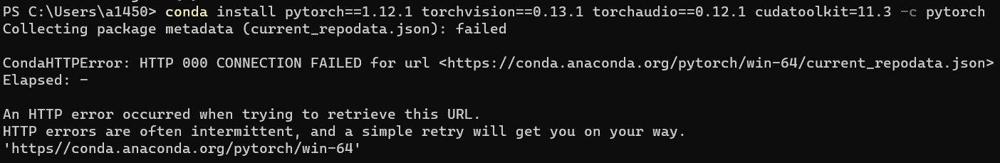

Anaconda 源设置 | pip 源设置 | 常用 Python 库安装
Anaconda配置源
清华大学开源软件镜像站
我的配置如下
channels:
- defaults
show_channel_urls: true
default_channels:
- https://mirrors.tuna.tsinghua.edu.cn/anaconda/pkgs/main
- https://mirrors.tuna.tsinghua.edu.cn/anaconda/pkgs/r
- https://mirrors.tuna.tsinghua.edu.cn/anaconda/pkgs/msys2
custom_channels:
conda-forge: https://mirrors.tuna.tsinghua.edu.cn/anaconda/cloud
msys2: https://mirrors.tuna.tsinghua.edu.cn/anaconda/cloud
bioconda: https://mirrors.tuna.tsinghua.edu.cn/anaconda/cloud
menpo: https://mirrors.tuna.tsinghua.edu.cn/anaconda/cloud
pytorch: https://mirrors.tuna.tsinghua.edu.cn/anaconda/cloud
pytorch-lts: https://mirrors.tuna.tsinghua.edu.cn/anaconda/cloud
simpleitk: https://mirrors.tuna.tsinghua.edu.cn/anaconda/cloud北京外国语大学开源软件镜像站
https://mirrors.tuna.tsinghua.edu.cn/news/bfsu-mirror/
北外镜像站作为 TUNA 镜像的姊妹站，由北外信息技术中心支持创办、清华 TUNA 协会运行维护，提供和 TUNA 镜像站基本一致的镜像内容，网络接入 CERNET2 IPv6 和中国移动 IPv4 线路，支持 HTTP/HTTPS/RSYNC 访问。如果您在使用 TUNA 镜像时遇到负载过高、速度过慢等问题，可以尝试切换至北外镜像站以获得更佳的体验。
对于在镜像使用中遇到的问题，您可以提交 issue 提出反馈或通过发送邮件到 support@tuna.tsinghua.edu.cn 联系我们。
我的配置如下
channels:
- defaults
show_channel_urls: true
default_channels:
- https://mirrors.bfsu.edu.cn/anaconda/pkgs/main
- https://mirrors.bfsu.edu.cn/anaconda/pkgs/r
- https://mirrors.bfsu.edu.cn/anaconda/pkgs/msys2
custom_channels:
conda-forge: https://mirrors.bfsu.edu.cn/anaconda/cloud
msys2: https://mirrors.bfsu.edu.cn/anaconda/cloud
bioconda: https://mirrors.bfsu.edu.cn/anaconda/cloud
menpo: https://mirrors.bfsu.edu.cn/anaconda/cloud
pytorch: https://mirrors.bfsu.edu.cn/anaconda/cloud
pytorch-lts: https://mirrors.bfsu.edu.cn/anaconda/cloud
simpleitk: https://mirrors.bfsu.edu.cn/anaconda/cloudMamba替代加速Conda
安装
conda install -c conda-forge mamba使用Mamba时其实只要将原有的Conda语句中的conda替换为mamba即可
以安装conda install numpy，使用以下命令则可替代
mamba install numpyConda安装指定版本库
可以先寻找一下有哪些版本
conda search pytorchconda search cudatoolkit然后可以指定一下pytorch, cudatoolkit版本，比如
conda install pytorch=1.12.0 torchvision torchaudio cudatoolkit=11.3pip配置源
清华源
北外源
pip安装指定版本的库
pip install matplotlib==3.4.3Pytorch安装
Pytorch v1.12.1官网的conda安装命令为（安装CUDA 11.6版本的pytorch）
conda install pytorch==1.12.1 torchvision==0.13.1 torchaudio==0.12.1 cudatoolkit=11.6 -c pytorch -c conda-forge-c pytorch参数原本指定为Pytorch官网源进行安装，由于源在国外，若未更换conda源，国内安装pytorch等容易失败

在配置上述Anaconda源后，即可顺利安装，因为若在conda源添加
custom_channels:
pytorch: https://mirrors.bfsu.edu.cn/anaconda/cloud
conda-forge: https://mirrors.bfsu.edu.cn/anaconda/cloud-c pytorch -c conda-forge参数则指定到了国内源
v1.13.0
# CUDA 11.6
conda install pytorch torchvision torchaudio pytorch-cuda=11.6 -c pytorch -c nvidia
# CUDA 11.7
conda install pytorch torchvision torchaudio pytorch-cuda=11.7 -c pytorch -c nvidiav1.12.1
# CUDA 10.2
conda install pytorch==1.12.1 torchvision==0.13.1 torchaudio==0.12.1 cudatoolkit=10.2 -c pytorch
# CUDA 11.3
conda install pytorch==1.12.1 torchvision==0.13.1 torchaudio==0.12.1 cudatoolkit=11.3 -c pytorch
# CUDA 11.6
conda install pytorch==1.12.1 torchvision==0.13.1 torchaudio==0.12.1 cudatoolkit=11.6 -c pytorch -c conda-forge
# CPU Only
conda install pytorch==1.12.1 torchvision==0.13.1 torchaudio==0.12.1 cpuonly -c pytorchv1.12.0
# CUDA 10.2
conda install pytorch==1.12.0 torchvision==0.13.0 torchaudio==0.12.0 cudatoolkit=10.2 -c pytorch
# CUDA 11.3
conda install pytorch==1.12.0 torchvision==0.13.0 torchaudio==0.12.0 cudatoolkit=11.3 -c pytorch
# CUDA 11.6
conda install pytorch==1.12.0 torchvision==0.13.0 torchaudio==0.12.0 cudatoolkit=11.6 -c pytorch -c conda-forge
# CPU Only
conda install pytorch==1.12.0 torchvision==0.13.0 torchaudio==0.12.0 cpuonly -c pytorch个人常用库
pip安装
pip install opencv-python opencv-contrib-python pydicom nibabel pandas numpy dill matplotlib==3.4.3conda安装
conda install numpy matplotlib=3.4.3OpenCV及其扩展模块
pip install opencv-python
pip install opencv-contrib-pythonpydicom
pip install pydicom